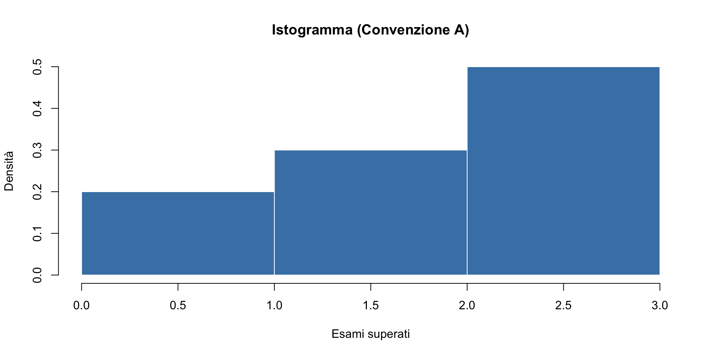
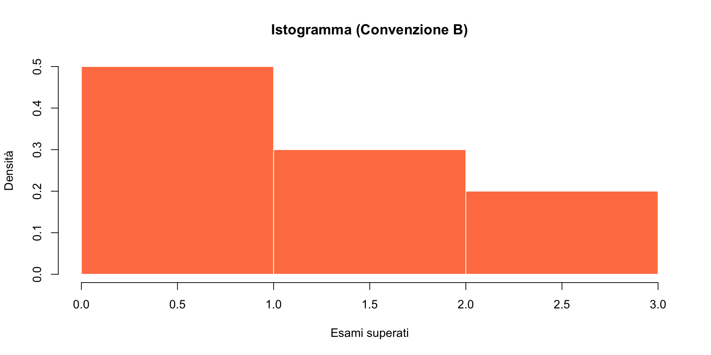
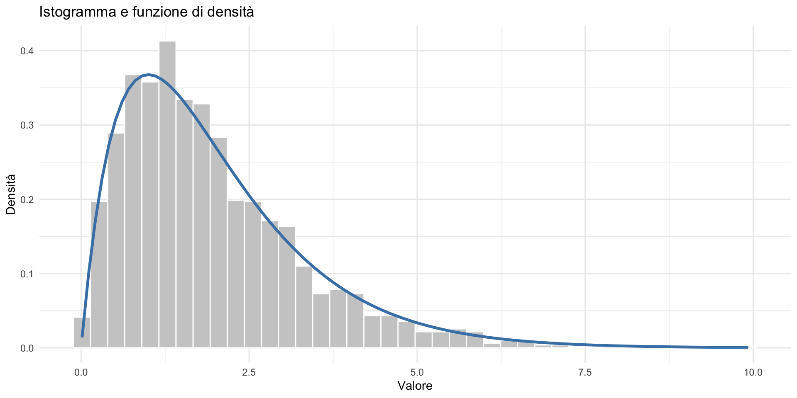
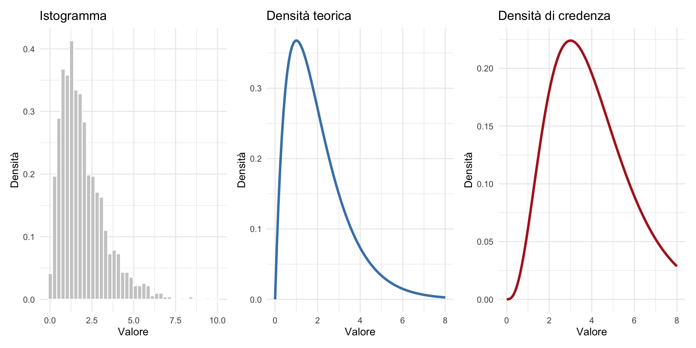

Istogramma
Dalla tabella di frequenze alla densità
![]()
29 ottobre 2026
Parte I: concetti e calcoli
Di che cosa parliamo
Immaginiamo di avere dei dati — ad esempio, un elenco di numeri — e di voler capire “come sono fatti”.
Invece di guardare un lungo elenco, ci conviene riassumere:
- quanti valori cadono in ciascun intervallo;
- quale quota del totale rappresentano;
- disegnare un grafico che mostri a colpo d’occhio dove si concentrano i dati.
Questo grafico si chiama istogramma.
Il nostro esempio
Consideriamo 10 studenti. Per ciascuno conosciamo il numero di esami superati nel primo semestre.
I dati (ordinati) sono: 0, 0, 1, 1, 1, 2, 2, 2, 3, 3.
Osservazione immediata:
- il valore più piccolo è 0, il più grande è 3;
- totale osservazioni: \(n = 10\).
Come facciamo a riassumere questa lista in modo più compatto?
Passo 1: definire le “classi”
L’idea è raggruppare i valori in intervalli (classi) e poi contare quante osservazioni cadono in ciascun intervallo.
Per i nostri dati (da 0 a 3) possiamo scegliere tre classi di ampiezza 1:
| Classe | Da … | … a … |
|---|---|---|
| prima | 0 | 1 |
| seconda | 1 | 2 |
| terza | 2 | 3 |
Ma c’è un problema: uno studente con esattamente 1 esame va nella prima o nella seconda classe?
Il problema dei confini delle classi
Spesso le classi sono definite con estremi in comune (es. “0-1” e “1-2”). In questo caso, il valore 1 potrebbe teoricamente appartenere a entrambe.
Questa ambiguità viola un principio fondamentale dell’organizzazione dei dati: ogni osservazione deve ricadere in una, e una sola, classe.
Per eliminare ogni dubbio, servono regole di classificazione non ambigue. La soluzione è utilizzare la notazione degli intervalli aperti e chiusi.
Intervalli aperti e chiusi
| Notazione | Significato |
|---|---|
| \([a, b]\) | include sia \(a\) sia \(b\) (chiuso da entrambi i lati) |
| \((a, b)\) | esclude sia \(a\) sia \(b\) (aperto da entrambi i lati) |
| \([a, b)\) | include \(a\), esclude \(b\) |
| \((a, b]\) | esclude \(a\), include \(b\) |
Esempio: \([1, 2)\) contiene \(1\), \(1.5\), \(1.99\)… ma non contiene \(2\).
Esempio: \((1, 2]\) contiene \(1.01\), \(1.5\), \(2\) … ma non contiene \(1\).
Che cos’è una “partizione”
Le classi devono formare una partizione dell’intervallo dei dati, cioè rispettare tre regole:
- Ogni osservazione cade in almeno una classe (copertura).
- Nessuna osservazione cade in due classi contemporaneamente (disgiunzione).
- L’unione di tutte le classi copre l’intero intervallo dei dati.
Usando gli intervalli aperti/chiusi possiamo garantire tutte e tre le regole.
Due convenzioni (entrambe corrette)
Convenzione A
Chiuso a sinistra, aperto a destra:
\[[0,\, 1), \quad [1,\, 2), \quad [2,\, 3]\]
I confini delle classi 1 e 2 vengono assegnati alla classe che li ha come estremo inferiore.
Convenzione B
Chiuso a destra, aperto a sinistra:
\[[0,\, 1], \quad (1,\, 2], \quad (2,\, 3]\]
I confini delle classi 1 e 2 vengono assegnati alla classe che li ha come estremo superiore.
Non c’è una convenzione “giusta”: basta dichiarare quale si usa.
Contiamo “a mano” — Convenzione A
Classi: \([0, 1)\), \([1, 2)\), \([2, 3]\)
Dati: 0, 0, 1, 1, 1, 2, 2, 2, 3, 3
| Classe | Quali valori contiene? | Osservazioni | Conteggio |
|---|---|---|---|
| \([0, 1)\) | 0 sì, 1 no | 0, 0 | 2 |
| \([1, 2)\) | 1 sì, 2 no | 1, 1, 1 | 3 |
| \([2, 3]\) | 2 sì, 3 sì | 2, 2, 2, 3, 3 | 5 |
| Totale | 10 |
Contiamo “a mano” — Convenzione B
Classi: \([0, 1]\), \((1, 2]\), \((2, 3]\)
Dati: 0, 0, 1, 1, 1, 2, 2, 2, 3, 3
| Classe | Quali valori contiene? | Osservazioni | Conteggio |
|---|---|---|---|
| \([0, 1]\) | 0 sì, 1 sì | 0, 0, 1, 1, 1 | 5 |
| \((1, 2]\) | 1 no, 2 sì | 2, 2, 2 | 3 |
| \((2, 3]\) | 2 no, 3 sì | 3, 3 | 2 |
| Totale | 10 |
Osservazione: i conteggi cambiano. Non è un errore — è una conseguenza della convenzione scelta.
Perché cambiano i conteggi?
La differenza è determinata esclusivamente da come gestiamo i valori di confine di classe (1 e 2). La loro collocazione cambia a seconda della convenzione scelta.
| Valore | Convenzione A | Convenzione B |
|---|---|---|
| 1 | Appartiene a \([1, 2)\) (seconda classe) | Appartiene a \([0, 1]\) (prima classe) |
| 2 | Appartiene a \([2, 3]\) (terza classe) | Appartiene a \((1, 2]\) (seconda classe) |
Spostamenti e stabilità
I valori agli estremi (0 e 3) finiscono sempre nella stessa classe. Sono i confini di classe interni (i punti di “giuntura”) che si spostano, alterando i conteggi delle frequenze.
Con dati continui (es. altezza, peso) il problema è concettualmente presente ma praticamente irrilevante: la probabilità di osservare un valore esattamente sul confine di un intervallo è praticamente zero.
Passo 2: frequenze relative
Le frequenze assolute sono i conteggi. Le frequenze relative sono le quote sul totale:
\[f_j = \frac{\text{conteggio della classe } j}{n}.\]
Convenzione A (\(n = 10\)):
| Classe | Freq. assoluta | Freq. relativa |
|---|---|---|
| \([0, 1)\) | 2 | \(2/10 = 0.20\) |
| \([1, 2)\) | 3 | \(3/10 = 0.30\) |
| \([2, 3]\) | 5 | \(5/10 = 0.50\) |
| Totale | 10 | 1.00 |
Proprietà delle frequenze relative
Le frequenze relative hanno due proprietà importanti:
- Ciascuna è compresa tra 0 e 1: \(\quad 0 \le f_j \le 1\).
- La somma fa sempre 1: \(\quad \sum_j f_j = 1\).
Nel nostro esempio: \(0.20 + 0.30 + 0.50 = 1.00\) ✓
Le frequenze relative ci dicono quale quota dei dati cade in ciascuna classe. Sono un primo passo verso il concetto di probabilità.
Passo 3: l’istogramma
Un istogramma è un grafico a barre in cui:
- l’asse orizzontale \(x\) mostra le classi;
- per ogni classe si disegna una barra (un rettangolo);
- il significato della barra dipende da cosa mettiamo sull’asse verticale.
Domanda chiave: cosa mettiamo sull’asse verticale?
- Frequenze assolute? (conteggi)
- Frequenze relative? (quote)
- Qualcos’altro?
Il problema delle classi di ampiezza diversa
Immaginiamo di raggruppare i dati (arbitrari) in tre classi aventi ampiezze diverse. In questa tabella, l’ultima classe copre un intervallo più ampio.
| Classe | Ampiezza | Frequenza Relativa |
|---|---|---|
| \([0, 1)\) | 1 | 0.20 |
| \([1, 2)\) | 1 | 0.30 |
| \([2, 5)\) | 3 | 0.50 |
Se usiamo la frequenza relativa come altezza, la terza barra sarà alta 0.50 e larga 3. La sua area è \(0.50 \times 3 = 1.50\).
Ma la prima barra ha area \(0.20 \times 1 = 0.20\).
Il confronto visivo è ingannevole: la terza barra sembra dominare, mentre la sua grande area deriva principalmente dalla maggiore ampiezza dell’intervallo, non da una densità di dati eccezionalmente elevata.
La soluzione: usare la densità
Per ottenere un confronto visivo corretto tra classi di diversa ampiezza, non usiamo più la frequenza relativa come altezza della barra, ma la sua densità.
La densità \(d_j\) di una classe si calcola come:
\[\boxed{d_j = \frac{f_j}{w_j}}\] dove:
- \(f_j\) è la frequenza relativa della classe,
- \(w_j\) è la sua ampiezza.
Perché funziona?
Usando la densità come altezza, l’area di ogni barra diventa:
\[\text{Area}_j = \underbrace{d_j}_{\text{altezza}} \times \underbrace{w_j}_{\text{larghezza}} = \frac{f_j}{w_j} \times w_j = f_j.\]
L’area della barra rappresenta quindi esattamente la sua frequenza relativa. Questa relazione vale per tutte le classi, indipendentemente dalla loro ampiezza, permettendo un confronto visivo corretto e coerente.
Calcoliamo la densità nel nostro esempio
Convenzione A, tutte le classi hanno ampiezza \(w = 1\):
| Classe | \(f_j\) | \(w_j\) | \(d_j = f_j / w_j\) | Area = \(d_j \times w_j\) |
|---|---|---|---|---|
| \([0,1)\) | 0.20 | 1 | 0.20 | 0.20 ✓ |
| \([1,2)\) | 0.30 | 1 | 0.30 | 0.30 ✓ |
| \([2,3]\) | 0.50 | 1 | 0.50 | 0.50 ✓ |
| Σ = 1.00 ✓ |
Quando le classi sono tutte uguali, la densità coincide con la frequenza relativa.
Ma la formula della densità funziona sempre, anche con classi di ampiezza diversa.
Esempio: classi di ampiezza diversa
Osserviamo un nuovo insieme di dati, suddiviso in classi di ampiezza diversa.
| Classe | \(f_j\) | \(w_j\) | \(d_j = f_j / w_j\) |
|---|---|---|---|
| \([0, 2)\) | 0.25 | 2 | 0.125 |
| \([2, 3)\) | 0.30 | 1 | 0.30 |
| \([3, 6)\) | 0.45 | 3 | 0.15 |
Osservazioni chiave
- Le densità (\(d_j\)) sono diverse dalle frequenze (\(f_j\)) perché l’ampiezza (\(w_j\)) non è costante.
- La classe \([2, 3)\), pur avendo una frequenza relativa (0.30) simile a quella di \([3, 6)\) (0.45), ha la densità più alta (0.30): significa che i dati sono molto “concentrati” in quel breve intervallo.
- La classe \([0, 2)\) ha una frequenza (0.25), ma, a causa dell’intervallo ampio, la sua densità (0.125) è la più bassa, indicando una minore concentrazione di dati.
Usando la densità come altezza,
- l’istogramma rifletterà correttamente la concentrazione dei dati in ogni intervallo,
- permettendo confronti visivi non distorti dall’ampiezza diversa delle classi.
Come si interpreta un istogramma?
Nell’istogramma, dove sull’asse \(y\) troviamo la densità, la lettura si basa su tre principi chiave.
1️⃣ Altezza = Concentrazione
L’altezza di una barra indica quanto sono concentrati i dati in quell’intervallo, per unità della variabile \(x\).
Un’altezza maggiore mostra una maggiore densità di osservazioni.
2️⃣ Area = Proporzione
L’area della barra rappresenta la proporzione (frequenza relativa) dei dati che cadono in quella classe.
3️⃣ Area Totale = 100%
La somma delle aree di tutte le barre è sempre uguale a 1 (o al 100% dei dati).
Regola pratica per l’interpretazione
In un istogramma, conta l’area, non l’altezza.
Come disegnare un istogramma “a mano”
Finora abbiamo parlato di concetti e calcoli.
Ora fermiamoci un momento e chiediamoci:
come si costruisce concretamente un istogramma, passo per passo, senza il computer?
Passo 1: disegnare gli assi
Per prima cosa tracciamo due assi cartesiani:
- Asse orizzontale \(x\)
rappresenta la variabile osservata
(qui: numero di esami superati)
- Asse verticale \(y\)
rappresenta la densità
(non i conteggi, non le frequenze relative)
È importante decidere prima cosa mettiamo sugli assi: questo determina come si leggerà il grafico.
Passo 2: suddividere l’asse \(x\) in classi
Sull’asse \(x\):
- scegliamo le classi (intervalli),
- specifichiamo chiaramente i confini (aperti/chiusi),
- dobbiamo verificare che le classi formino una partizione.
Nel nostro esempio (Convenzione A):
\[[0,1), \quad [1,2), \quad [2,3]\]
Queste classi coprono tutto l’intervallo dei dati e non si sovrappongono.
Passo 3: calcolare la densità di ogni classe
Per ciascuna classe:
- contiamo quante osservazioni cadono nella classe,
- dividiamo per il totale → frequenza relativa \(f_j\),
- dividiamo per l’ampiezza della classe \(w_j\).
Otteniamo la densità:
\[ d_j = \frac{f_j}{w_j}. \]
La densità ci dice quanti dati abbiamo per unità dell’asse \(x\).
Passo 4: disegnare le barre
Ora possiamo disegnare l’istogramma vero e proprio:
- per ogni classe, disegniamo un rettangolo,
- la base del rettangolo coincide con la classe sull’asse \(x\),
- l’altezza del rettangolo è la densità \(d_j\).
Il risultato è una serie di barre adiacenti, senza spazi.
Come interpretare il disegno
In un istogramma costruito correttamente:
- l’altezza della barra indica la densità,
- l’area della barra indica la frequenza relativa della classe,
- la somma delle aree di tutte le barre è 1.
Regola fondamentale (da ricordare sempre):
Nell’istogramma conta l’area, non l’altezza.
Perché questo passaggio è importante
Capire come disegnare un istogramma “a mano” serve a:
- evitare interpretazioni sbagliate dei grafici prodotti dal computer,
- capire perché l’asse \(y\) non è sempre una frequenza,
- prepararsi al passaggio alle densità continue.
Adesso siamo pronti a vedere come R automatizza questi passaggi.
Parte II: l’istogramma in R
Che cosa faremo
Nella Parte I abbiamo fatto tutto “a mano”: classi, conteggi, frequenze relative e densità.
Adesso ripetiamo gli stessi passaggi usando R.
L’obiettivo non è introdurre nuovi concetti, ma verificare che il computer produca gli stessi numeri che abbiamo calcolato noi.
I dati in R
In R, un elenco di numeri si chiama vettore e si crea con la funzione c() (combine):
La freccia <- significa “assegna”: stiamo dando il nome x a questo insieme di dati.
Quante osservazioni?
La funzione length() restituisce il numero di elementi di un vettore:
Abbiamo quindi \(n = 10\) osservazioni — esattamente come nella Parte I.
Creare le classi con cut()
La funzione cut() svolge il lavoro che, nella Parte I, abbiamo fatto manualmente con le tabelle:
assegna ogni osservazione a una classe.
Per usarla dobbiamo specificare:
- i confini delle classi (
breaks); - come trattare i confini: chiusi a sinistra o a destra (
right).
Convenzione A in R
Nella Parte I abbiamo usato le classi \([0,1),\ [1,2),\ [2,3]\).
In R:
breaks = c(0, 1, 2, 3)— quattro confini che delimitano tre classi;right = FALSE— convenzione \([a, b)\);include.lowest = TRUE— evita che il valore massimo resti escluso.
Cosa ha fatto cut()?
Guardiamo il risultato:
Per ciascuna delle 10 osservazioni, R indica la classe di appartenenza.
Confronto con la Parte I:
| Osservazione | Valore | Classe (a mano) | Classe (R) |
|---|---|---|---|
| 1ª, 2ª | 0 | \([0, 1)\) | [0,1) |
| 3ª, 4ª, 5ª | 1 | \([1, 2)\) | [1,2) |
| 6ª, 7ª, 8ª | 2 | \([2, 3]\) | [2,3] |
| 9ª, 10ª | 3 | \([2, 3]\) | [2,3] |
I risultati coincidono perfettamente. ✓
Contare: table()
La funzione table() conta quante osservazioni cadono in ciascuna classe — cioè calcola le frequenze assolute:
Nella Parte I avevamo ottenuto: 2, 3, 5. Stesso risultato. ✓
Costruire la tabella di frequenze
Usiamo il vettore classi_A e procediamo per passi:
Cos’è un data frame in R
Un data frame è la struttura standard di R per lavorare con dati tabellari.
Puoi pensarlo come:
- una tabella,
- con righe = osservazioni,
- e colonne = variabili.
Caratteristiche principali:
- ogni colonna può avere un nome;
- tutte le colonne hanno la stessa lunghezza;
- colonne diverse possono avere tipi diversi (numeri, fattori, caratteri).
Classe Freq_assoluta
1 [0,1) 2
2 [1,2) 3
3 [2,3] 5Punto chiave: table(classi_A) calcola automaticamente le frequenze assolute delle classi.
Classe Freq_assoluta Freq_relativa
1 [0,1) 2 0.2
2 [1,2) 3 0.3
3 [2,3] 5 0.5tab_A$Freq_relativa→ crea una nuova colonna;- dividiamo ogni frequenza assoluta per il totale
n.
Verifica finale
Le frequenze relative devono sommare a 1:
Se il risultato è 1, la ripartizione è corretta.
Convenzione B in R
Nella Parte I, la Convenzione B era: \([0,1],\ (1,2],\ (2,3]\).
Classe Freq_assoluta Freq_relativa
1 [0,1] 5 0.5
2 (1,2] 3 0.3
3 (2,3] 2 0.2Nella Parte I avevamo trovato: 5, 3, 2. Ancora una volta, stesso risultato. ✓
Confronto tra le due convenzioni
| Parametro | Convenzione A | Convenzione B |
|---|---|---|
right |
FALSE → \([a, b)\) |
TRUE → \((a, b]\) |
include.lowest |
chiude l’ultimo intervallo → \([2,3]\) | chiude il primo intervallo → \([0,1]\) |
| Breaks | c(0, 1, 2, 3) |
c(0, 1, 2, 3) |
I breaks sono identici; cambia solo come R tratta i confini.
L’istogramma: hist()
La funzione
hist()disegna l’istogramma.Con
freq = FALSE, l’asse verticale mostra la densità (non i conteggi).

Che cosa ha disegnato R?
Le tre barre hanno altezze 0.20, 0.30 e 0.50.
Sono esattamente le densità che avevamo calcolato a mano nella Parte I (e in questo caso coincidono con le frequenze relative, perché tutte le classi hanno ampiezza 1).
Parametri grafici principali:
col = "steelblue"— colore delle barre;border = "white"— bordo bianco tra le barre (migliora la leggibilità);main,xlab,ylab— titolo e etichette degli assi.
Confronto tra le due convenzioni
Ora disegniamo l’istogramma con la Convenzione B, mantenendo la stessa scala verticale:

Stessi dati. Stessa scala verticale. Forma diversa.
La differenza nasce dal fatto che i valori 1 e 2, che stanno sui confini, vengono assegnati a classi diverse.
Verifica: la somma delle aree è 1?
Usiamo hist() con plot = FALSE per ottenere solo i numeri, senza disegnare il grafico:
L’oggetto h contiene tutte le informazioni dell’istogramma:
Il calcolo dell’area
L’area di ciascuna barra è:
\[ \text{area} = \text{densità} \times \text{ampiezza}. \]
Le ampiezze si ottengono come differenze tra i confini:
R ↔︎ Parte I: corrispondenza completa
| Operazione | In R | Nella Parte I |
|---|---|---|
| Definire le classi | cut() |
Scelta degli intervalli |
| Contare | table() |
Conteggi manuali |
| Frequenze relative | freq / n |
\(f_j = n_j / n\) |
| Istogramma (densità) | hist(freq = FALSE) |
Barre con altezza \(d_j\) |
| Area delle barre | density × width |
\(d_j \times w_j = f_j\) |
| Somma delle aree | sum() |
\(\sum f_j = 1\) |
Ma allora: dove si concentrano davvero i dati?
Abbiamo detto che l’istogramma mostra dove si concentrano le osservazioni.
Eppure, usando due convenzioni diverse, otteniamo risposte opposte:
| Convenzione A | Convenzione B | |
|---|---|---|
| Barra più alta | \([2,3]\) — a destra | \([0,1]\) — a sinistra |
| Barra più bassa | \([0,1)\) — a sinistra | \((2,3]\) — a destra |
Chi ha ragione?
La risposta
Nessuna delle due. Il risultato è un artefatto della discretizzazione.
Il problema non è nei dati. Il problema è che qui abbiamo:
- solo 10 osservazioni;
- valori interi;
- tutte le osservazioni cadono esattamente sui confini delle classi.
Questa è la situazione peggiore possibile per un istogramma.
Ogni osservazione può essere assegnata alla classe di sinistra oppure a quella di destra, e la scelta della convenzione cambia completamente il risultato.
In questo esempio, nessun dato cade davvero “dentro” una classe: tutti sono “sul bordo”. Il profilo dell’istogramma è quindi determinato interamente dalla convenzione.
Con molti dati il problema scompare
Con molte osservazioni (per esempio, altezze di persone):
- i valori sono continui (167.3, 172.8, 155.1, …);
- la probabilità di cadere esattamente su un confine è praticamente zero;
- le diverse convenzioni producono istogrammi quasi indistinguibili.
Il nostro esempio è un caso estremo, costruito apposta per rendere visibile un effetto che, nei dati reali, è quasi sempre trascurabile.
La lezione da portare a casa
Ogni discretizzazione è una scelta
Raggruppare dati in classi significa fare un’approssimazione. Un istogramma non è “la verità” sui dati, ma una rappresentazione che dipende da:
- numero delle classi,
- ampiezza delle classi,
- convenzione sui confini.
Con molti dati e scelte ragionevoli, le rappresentazioni convergono. Con pochi dati, le differenze possono diventare ingannevolmente grandi.
Verso le curve di densità continue
Se avessimo molte osservazioni e classi sempre più strette, l’istogramma perderebbe l’aspetto “a gradini” e assumerebbe un profilo sempre più regolare.
Nel limite, questo profilo converge a una curva liscia chiamata funzione di densità.
La funzione di densità è un oggetto matematico continuo e, a differenza dell’istogramma, non dipende da scelte arbitrarie come il numero delle classi o la convenzione dei confini.

Un punto di vista utile
La funzione di densità può essere vista come:
- il limite ideale dell’istogramma quando rendiamo le classi sempre più strette;
- una descrizione continua di come i valori si concentrano lungo l’asse dei possibili risultati.
In altre parole:
l’istogramma è qualcosa facile da capire e che sappiamo costruire a mano; la densità è l’oggetto astratto a cui questo procedimento tende.
L’istogramma è quindi il nostro ancoraggio intuitivo: ci permette di collegare calcoli concreti a concetti continui più generali.
Dalla descrizione dei dati all’incertezza
Una curva di densità non serve solo a riassumere dati già osservati.
Può anche essere usata per rappresentare la nostra incertezza rispetto a una quantità non ancora nota, per esempio:
- “Quale potrebbe essere il mio voto al prossimo esame?”
- “Quanto tempo potrebbe richiedere questo progetto?”
- “Qual è un valore plausibile di un parametro che voglio stimare?”
In tutti questi casi, la densità fornisce una rappresentazione continua di quanto ciascun valore è più o meno compatibile con ciò che sappiamo.
Verso l’approccio bayesiano
Nella statistica bayesiana useremo le densità in due momenti distinti:
Prima di osservare nuovi dati (prior): una densità che rappresenta ciò che sappiamo — o assumiamo — su una quantità incerta.
Dopo aver osservato i dati (posterior): una densità aggiornata che tiene conto sia delle informazioni iniziali sia dei dati osservati.
L’idea chiave è questa:
le stesse densità che oggi nascono come limite degli istogrammi diventeranno lo strumento centrale per quantificare e aggiornare l’incertezza.
Riepilogo
| Concetto | Significato | Formula |
|---|---|---|
| Frequenza assoluta | conteggio per classe | — |
| Frequenza relativa | quota sul totale | \(f_j = n_j / n\) |
| Densità | freq. relativa per unità di ampiezza | \(d_j = f_j / w_j\) |
| Area della barra | quota complessiva della classe | \(d_j \times w_j = f_j\) |
Punti chiave
- Le classi devono formare una partizione (serve una convenzione sui confini).
- Nell’istogramma conta l’area delle barre, non l’altezza in sé.
- La somma delle aree è sempre 1.
- La discretizzazione è una scelta: con pochi dati può essere fuorviante.
- Con molti dati, le differenze tra convenzioni diventano trascurabili.
- La densità continua è il limite ideale dell’istogramma.
- Le densità sono il ponte concettuale tra ciò che sappiamo calcolare a mano e il linguaggio che useremo per descrivere e gestire l’incertezza (Bayes).

Come “leggere” una funzione di densità
Una funzione di densità non si legge punto per punto.
Il valore della curva in un punto non è qualcosa di interpretabile da solo.
Quello che conta è come la curva si distribuisce lungo l’asse dei valori.
Dove la curva è alta
Dove la densità è più alta:
- i valori sono più concentrati;
- troviamo una maggiore accumulazione lungo l’asse;
- quei valori sono più compatibili con ciò che la curva rappresenta.
Non significa che “quel valore è il più importante”, ma che quella regione dell’asse conta di più rispetto ad altre.
Dove la curva è bassa
Dove la densità è bassa:
- i valori sono meno concentrati;
- quella regione contribuisce poco alla descrizione complessiva;
- quei valori sono meno compatibili, ma non impossibili.
Una densità non esclude valori: li pesa in modo diverso lungo l’asse.
L’idea fondamentale: le aree
Il significato della densità non sta nell’altezza della curva, ma nelle aree sotto la curva.
Pensatela come l’istogramma:
- nell’istogramma conta l’area delle barre;
- nella densità conta l’area sotto la curva.
È lo stesso principio, portato al limite continuo.
Confrontare regioni, non punti
Una funzione di densità si usa per confrontare intervalli di valori:
- questa regione dell’asse è più rilevante o meno rilevante?
- dove si concentra la maggior parte della massa?
- quanto “spazio” occupa una certa fascia di valori?
Il linguaggio è geometrico, non puntuale.
Un’interpretazione intuitiva
Potete leggere una densità come una mappa di concentrazione:
- zone “ad alta contentrazione” → zone dense;
- zone “a bassa concentrazione” → zone rade;
- l’area totale sotto la curva è sempre la stessa.
È una generalizzazione continua di ciò che già sapete fare con un istogramma.
Perché partire dall’istogramma
L’istogramma è importante perché:
- può essere costruito a mano;
- rende visibile il ruolo delle aree;
- permette di capire la densità senza formule nuove.
La funzione di densità non introduce un’idea nuova: rende continua un’idea che già conosciamo.
Messaggio finale della lezione
Stesso oggetto, ruoli diversi
Una funzione di densità è uno stesso oggetto matematico che può:
- descrivere dati osservati;
- rappresentare incertezza;
- essere aggiornata quando arrivano nuove informazioni.
Il linguaggio è lo stesso. Cambierà l’interpretazione.
Da qui in avanti
Abbiamo costruito il vocabolario visivo e concettuale:
- istogrammi;
- aree;
- densità.
Nelle prossime lezioni useremo questo linguaggio per parlare in modo rigoroso di incertezza, aggiornamento e inferenza.
Ma l’intuizione di base è già tutta qui.